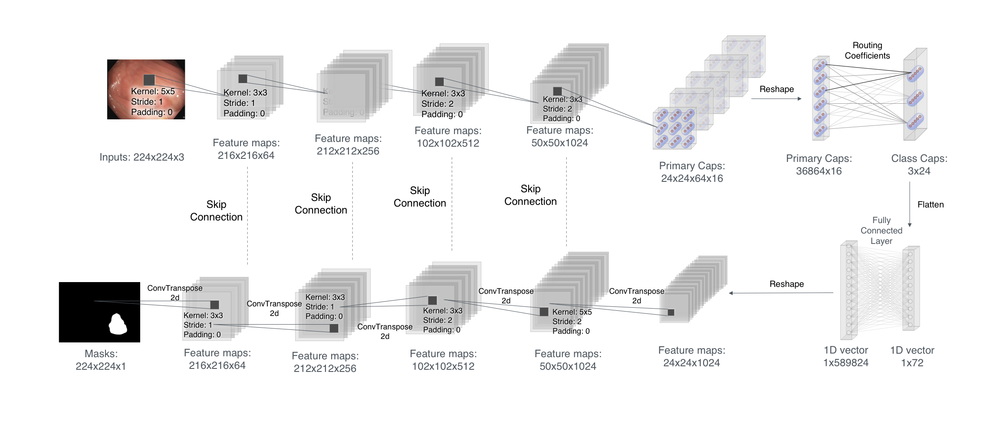
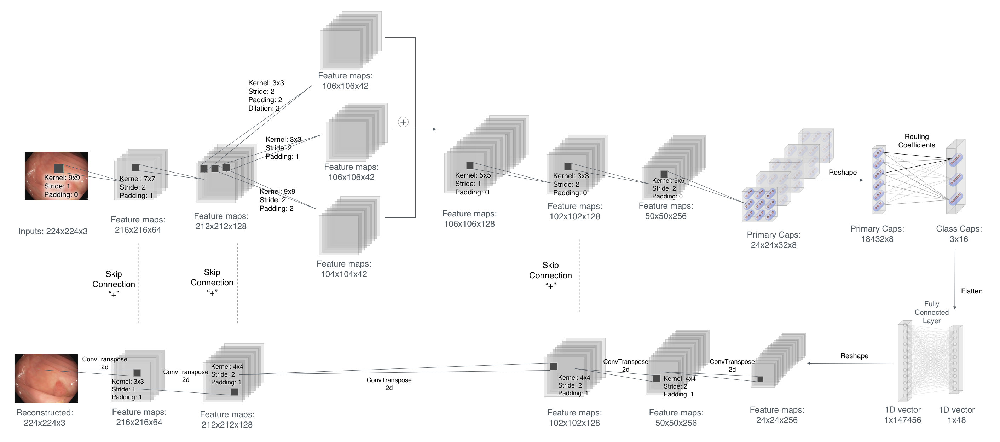
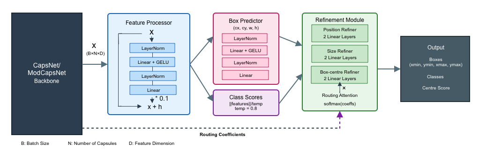
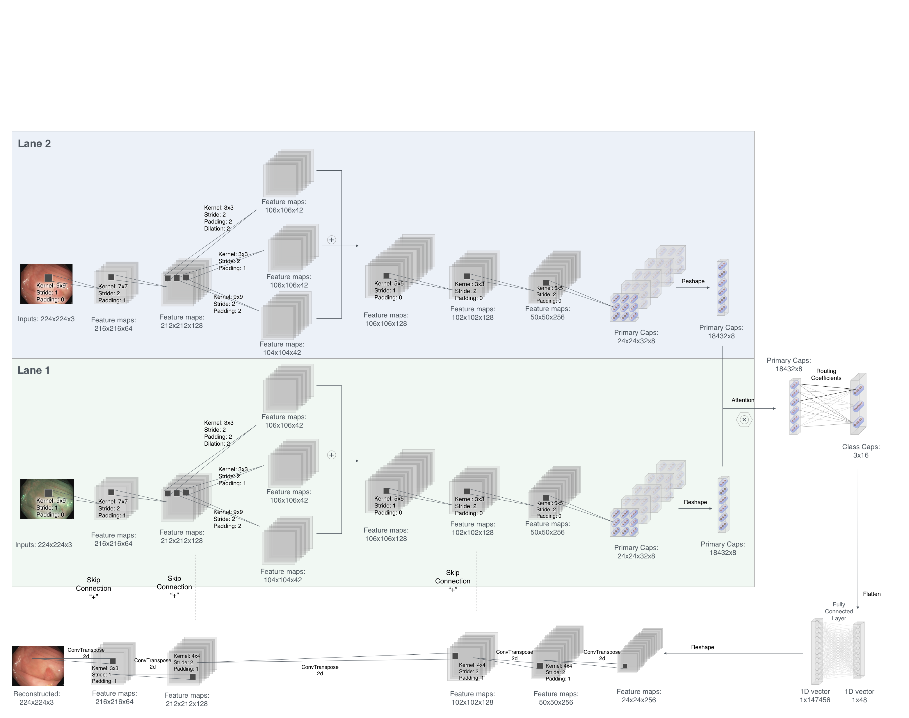

Delivering Explainability with Capsule Networks in Diagnostic Medical Imaging for Colorectal Cancer
Presented by
Heba El-Shimy
Provost Fellow | PhD Candidate
School of Mathematical and Computer Sciences
Heriot-Watt University Dubai
Email: H.Elshimy@hw.ac.uk
Webpage: www.macs.hw.ac.uk/~he4002/
Supervisors
Prof. Hind Zantout
Prof. Michael Lones
Dr. Neamat El Gayar
Link to slides
Research Questions
- How do CapsNets serve as an appropriate architecture for diagnostics in medical imaging?
- What are the abilities and limitations of SSL methods for pre-training CapsNets in medical imaging?
-
To what degree is the output of CapsNets interpretable?
- How can the resulting interpretations feed into explanations that are meaningful for clinicians?
Contributions
-
Two peer-reviewed papers:
-
A review of capsule networks in medical image analysis (El-Shimy et al., 2022);
El-Shimy, H., Zantout, H., Lones, M., & Gayar, N. E. (2022). A review of capsule networks in medical image analysis. Lecture notes in computer science, 65– 80. https://doi.org/10.1007/978-3-031-20650-4\_6
-
Self-Supervised Learning for Pre-training Capsule Networks: Overcoming Medical Imaging Dataset Challenges (accepted, publishing in progress)(El-Shimy et al., 2025)
El-Shimy, H., Zantout, H., Lones, M. A., & Gayar, N. E. (2025). Self-supervised learning for pre-training capsule networks: Overcoming medical imaging dataset challenges. https://arxiv.org/abs/2502.04748
-
A review of capsule networks in medical image analysis (El-Shimy et al., 2022);
-
Developing ModCapsNet, a novel capsule network architecture that generalises across classification, segmentation, and localisation tasks:
- Advanced training strategies and adapted loss function;
- Novel Dual-Lane architecture for processing multi-modal (WL & NBI) images;
- Creating a SSL framework for pre-training CapsNet that outperforms ImageNet pre-training
- Devising a novel interpretability framework for CapsNets, enabling the generation of explanations in medical terminology
ModCapsNet
- Segmentation
- Classification
- Polyp Detection
- Multi-modal
Methodology
-
PICCOLO
3,433 frames; in NBI & WL modalities
High-quality frames with extenstive annotations
Small, imbalanced, and exhibits distributional shifts
Excellent for testing the capability of CapsNet in handling small and imbalanced data; and creating clinically-relevant explanations
-
PolypSet
37,899 frames; in NBI & WL modalities
Comprises 4 different datasets
High variability in quality between frames
Used for benchmarking and pre-training purposes
Conclusions
- CapsNets are a promising architecture for medical imaging tasks, especially due to their inherent interpretability and ability to generalise across tasks
- Our innovative CapsNet interpretability framework enables the generation of explanations that are meaningful for clinicians, contributing to the field of xAI
- Data quality remain key to the success of any AI system, and affect the quality of the generated explanations, not just the model performance
- Doctors seeking to use CADe/x systems in their practice are a key part of the development process; their feedback is crucial, and they should be encouraged to help collect and annotate the data with the explanations they expect to get from the system.